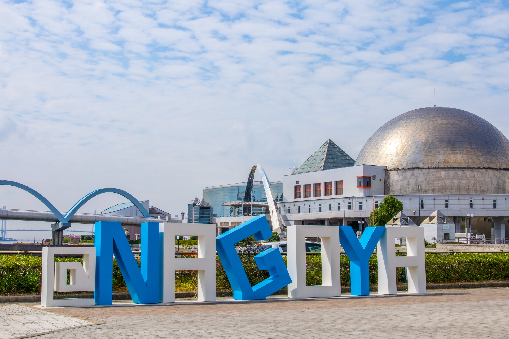

名古屋港水族館

見どころ
基本情報
| 住所 | 愛知県名古屋市港区港町1-3 |
|---|---|
| 営業時間 | 通常期間 9:30〜17:30／夏休み期間 9:30〜20:00／冬期 9:30〜17:00 |
| 休館日 | 月曜（祝日の場合は翌日）、冬期メンテナンス休暇あり |
| アクセス | 地下鉄名港線「名古屋港駅」下車 徒歩5分（3番出口） |

| 住所 | 愛知県名古屋市港区港町1-3 |
|---|---|
| 営業時間 | 通常期間 9:30〜17:30／夏休み期間 9:30〜20:00／冬期 9:30〜17:00 |
| 休館日 | 月曜（祝日の場合は翌日）、冬期メンテナンス休暇あり |
| アクセス | 地下鉄名港線「名古屋港駅」下車 徒歩5分（3番出口） |